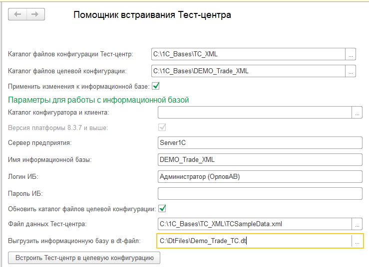
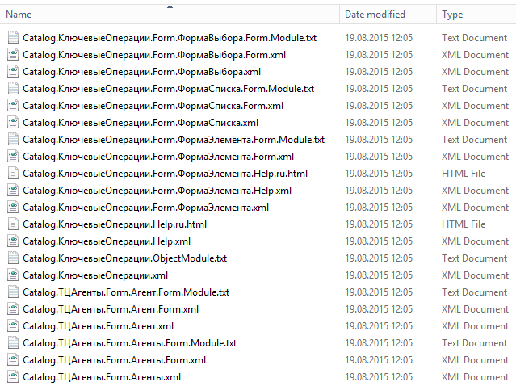

Обработка «Помощник встраивания Тест-центра»
Обработка предназначена для автоматизации процесса встраивания конфигурации «Тест-центр» в тестируемые информационные базы.
Использование обработки в интерактивном режиме
Обработка выполняет встраивание конфигурации Тест-центр в конфигурацию целевой информационной базы. Минимальная версия платформы для работы с обработкой — 8.3.6.
Пример заполнения полей обработки:
Описание полей обработки:
Каталог файлов конфигурации Тест-центр:
Каталог с выгруженными файлами конфигурации Тест-центр, является обязательным параметром. Выгрузку файлов можно осуществить с помощью конфигуратора, выполнив команду "Выгрузить конфигурацию в файлы..." меню "Конфигурация", или запустив конфигуратор в пакетном режиме с ключом "/DumpConfigToFiles <каталог выгрузки> -format Plain" (при использовании платформы версии 8.3.6 ключ -format Plain указывать не нужно).
Каталог с выгруженными файлами конфигурации Тест-центр обычно имеет следующий вид:
Каталог файлов целевой конфигурации:
Каталог с файлами целевой конфигурации, является обязательным параметром. Выгрузку файлов можно осуществить с помощью конфигуратора, выполнив команду "Выгрузить конфигурацию в файлы..." меню "Конфигурация", или запустив конфигуратор в пакетном режиме с ключом "/DumpConfigToFiles <каталог выгрузки>".Применить изменения к информационной базе:
Указывает, что после встраивания «Тест-центра» в файлы целевой конфигурации необходимо загрузить полученную конфигурацию в целевую информационную базу.Каталог конфигуратора и клиента:
Каталог с исполняемыми файлами конфигуратора и тонкого клиента, указание не обязательно. Если поле не заполнено, используется каталог файлов программы.Версия платформы 8.3.7 и выше:
Указывает, что версия платформы, которая будет использоваться при встраивании «Тест-центра», имеет версию 8.3.7 или выше. Это поле недоступно, если не указан каталог конфигуратора и клиента, в этом случае версия платформы будет определена автоматически.Сервер предприятия:
Имя сервера 1С:Предприятие, на котором размещена целевая информационная база. Является обязательным полем только в случае, если установлен флаг "Применить изменения к информационной базе".Имя информационной базы:
Имя информационной базы, в которую будет встроен Тест-центр. Является обязательным полем только в случае, если установлен флаг "Применить изменения к информационной базе".Логин ИБ:
Имя пользователя целевой информационной базы.Пароль ИБ:
Пароль пользователя целевой информационной базы.Обновить каталог целевой конфигурации:
Указывает, что перед встраиванием Тест-центра конфигурация целевой информационной базы будет выгружена в файлы в каталог, указанный в поле "Каталог файлов целевой конфигурации".Файл данных Тест-центра:
Файл выгрузки данных Тест-центра, полученный с помощью универсальной обработки "Выгрузка и загрузка данных XML". Заполнение поля необязательно.Выгрузить информационную базу в dt-файл:
Полное имя dt-файла, в который будет выгружена информационная база после встраивания Тест-центра. Заполнение поля необязательно.
Запуск обработки с командной строки
Обработку встраивания Тест-центра можно запустить из командной строки, в общем случае строка запуска имеет следующий вид:
"<Каталог исполяемых файлов платформы>\1cv8c.exe" /IBConnectionString <Строка подключения к ИБ> /N <Имя пользователя> /P <Пароль пользователя> /Execute "<Полный путь к обработке встраивания Тест-центра>" /C "Merge;TCCatalog=<Каталог файлов Тест-центра>;TCDataFile=<Полный путь к файлу данных Тест-центра>;CfCatalog=<Каталог файлов целевой конфигурации>;ClientsPath=<Каталог файлов конфигуратора и тонкого клиента>;V837AndOlder=<0 или 1>;RefreshFiles=<0 или 1>;Server=<Имя сервера 1С:Предприятие>;IBName=<Имя целевой информационной базы>;Login=<Имя пользователя целевой информационной базы>;Pwd=<Пароль пользователя>;ResultDt=<dt-файл выгрузки целевой ИБ>;Result=<Полное имя текстового файла результата>"
Пример строки запуска:
"C:\Platform\x32\Current\1cv8c.exe" /IBConnectionString File="C:\1C_Bases\MergeBase"; /N "" /P "" /Execute "C:\EPF\ПомощникВстраиванияТестЦентра.epf" /C "Merge;TCCatalog=C:\1C_Bases\TC_XML;TCDataFile=C:\1C_Bases\TC_XML\TCSampleData.xml;CfCatalog=C:\1C_Bases\DEMO_Trade_XML;RefreshFiles=1;Server=Server1C;IBName=Demo_Trade;Login=Федоров (администратор);Pwd=;ResultDt=C:\DtFiles\Demo_Trade_TC.dt;Result=C:\Results\Trade_Result.txt"Параметры обработки указываются после ключа /C в строке запуска клиента 1С:Предприятие и имеют следующую структуру:
Merge; — ключевое слово, указывающее, что необходимо выполнить процесс встраивания Тест-центра в целевую информационную базу.
TCCatalog=<Каталог файлов Тест-центра>;
Задает каталог с выгруженными файлами конфигурации Тест-центр, является обязательным элементом. Выгрузку файлов можно осуществить с помощью конфигуратора, выполнив команду "Выгрузить конфигурацию в файлы..." меню "Конфигурация", или запустив конфигуратор в пакетном режиме с ключом "/DumpConfigToFiles <каталог выгрузки>".TCDataFile=<Полный путь к файлу данных Тест-центра>;
Задает файл выгрузки данных Тест-центра, полученный с помощью универсальной обработки "Выгрузка и загрузка данных XML". Этот элемент необязателен.CfCatalog=<Каталог файлов целевой конфигурации>;
Задает каталог с файлами целевой конфигурации, является обязательным элементом. Выгрузку файлов можно осуществить с помощью конфигуратора, выполнив команду "Выгрузить конфигурацию в файлы..." меню "Конфигурация", или запустив конфигуратор в пакетном режиме с ключом "/DumpConfigToFiles <каталог выгрузки>".ClientsPath=<Каталог файлов конфигуратора и тонкого клиента>;
Задает каталог, где размещаются файлы тонкого и толстого клиентов.V837AndOlder=<0 или 1>;
Указывает, что версия платформы, которая будет использоваться при встраивании «Тест-центра», имеет версию 8.3.7 или выше. Это поле не имеет смысла, если не указан каталог конфигуратора и клиента, в этом случае версия платформы будет определена автоматически.RefreshFiles=<0 или 1>;
Значение "1" указывает, что перед встраиванием Тест-центра конфигурация целевой информационной базы будет выгружена в файлы в каталог, указанный в поле "Каталог файлов целевой конфигурации".Server=<Имя сервера 1С:Предприятие>;
Задает имя сервера 1С:Предприятие, на котором размещена целевая информационная база.IBName=<Имя целевой информационной базы>;
Задает имя информационной базы, в которую будет встроен Тест-центр.Login=<Имя пользователя целевой информационной базы>;
Имя пользователя целевой информационной базы.Pwd=<Пароль пользователя>;
Пароль пользователя целевой информационной базы.ResultDt=<dt-файл выгрузки целевой ИБ>;
Задает полное имя dt-файла, в который будет выгружена информационная база после встраивания Тест-центра. Этот элемент необязателен.Result=<Полное имя текстового файла результата>;
Задает имя текстового файла, в который запишется строка "Ok" в случае, если встраивание завершится успешно. В случае ошибок файл будет содержать строку "Failed".
Все информационные сообщения и сообщения об ошибках записываются в журнал регистрации ИБ, в контексте которой выполняется обработка встраивания Тест-центра.